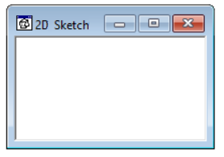
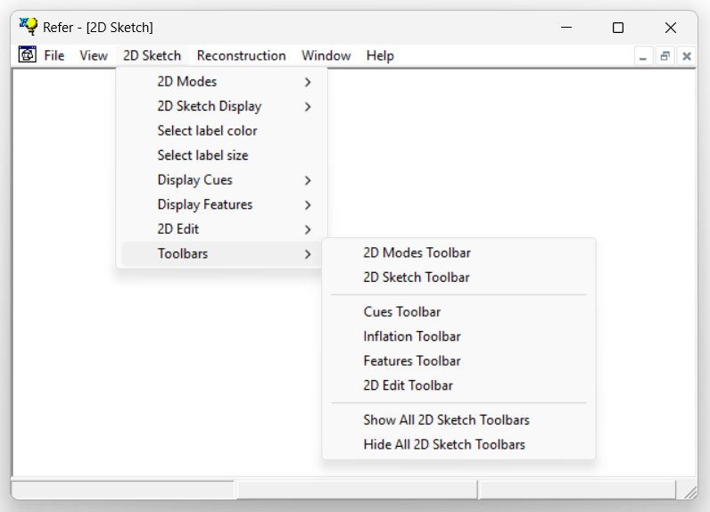

1.5.3.3 2D Sketch Window
The 2D Sketch window opens automatically when a file is loaded. If it is a new file, the window displays an empty sketching area. If an existing file -in any of the different input formats- is opened, the contents will be displayed in the sketch window

The 2D Sketch window is intended for :
1) Sketching new drawings.
2) Editing the current sketch.
3) Displaying vectorized line-drawings(1).
4) Displaying information related to the different cues and features detected in the sketch/drawing(2).
The contents displayed in the sketch window can be controlled via the Display 2D Sketch toolbar.
The user can then interact with the window contents. The cursor can operate in different 2D input modes while inside the 2D Sketch window. The user can switch between these modes using the 2D Modes Toolbar.
The 2D Sketch window is linked to five toolbars that control its operation and the contents being displayed within the window.

NOTES:
(1) Visualization tools for vectorized line-drawings can be found in the Display 2D Sketch toolbar.
(2) Visualization tools for cues and features can be found in the Display Cues toolbar and Display Features toolbar.